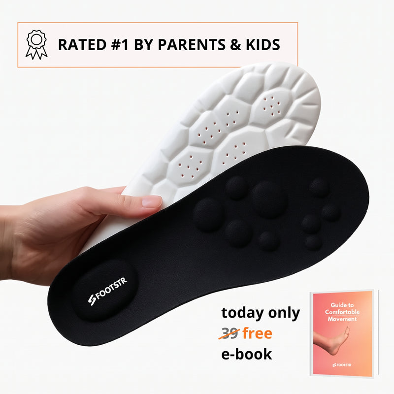

Footstr OBSERVAR
Copie o ângulo de proteção ("pais comprando pro filho") como teste futuro de avatar, e a garantia de 90 dias. Evite entrar agora no mesmo avatar infantil: a operação está desacelerando e o tráfego caiu 25% no mês.
01Produto campeão

produto que os anúncios do nicho promovem
Footstr™ – InsoleX
$34,99de $59,99 · 9 produtos no catálogo · mediana $34,99
palmilha de alinhamento, foco em criança com pé chato (tamanhos infantis e adultos). observado
| Principais produtos | Leitura |
|---|---|
| Footstr™ – InsoleX | campeão no nicho de dor no pé |
| Catálogo (9 itens, $2,99 a $34,99) | palmilha InsoleX (adulto e criança), almofada de calcanhar, rolo, fita, joelheira |
02Mídia paga
171
anúncios ativos hoje
soma de 6 página(s): Footstr, Heel Pain Journal, Growing Feet Journal, Dr. Blane - Pediatric Specialist…
observado · conector Meta Ads
1.720
no histórico total
ACTIVE + inativos, mesmas páginas
observado
9,9%
Sobrevivência
ativos ÷ histórico
calculado
30
anúncios no Google Ads
Google Ads Transparency Center
observado
| Ritmo de criativo | Valor | Leitura |
|---|---|---|
| criativos únicos na amostra de 50 | 7 | títulos distintos nos 50 anúncios ativos mais recentes |
| por dia | ~5 | janela da amostra: 10,6 dias |
| únicos por semana | ~5 | capacidade de produzir criativo novo |
| duplicação | 7,1x | anúncios ÷ criativos únicos: mesma peça em várias variações |
| longevidade máxima | 130 dias | o criativo campeão é o mais longevo da mineração (não o mais recente) |
| mix de formato | vídeo 50% · estático 50% | amostra de 38 anúncios no nicho |
| nível de sofisticação | nível 1 | vídeo de celular, estático com texto ou catálogo: produção barata |
Ranking de criativos vencedores (por longevidade)
| # | Criativo | Dias no ar | Formato | Ângulo / hook | Biblioteca |
|---|---|---|---|---|---|
| 1 | Support Flat Feet the Right Way | 130 dias | VIDEO | No kid should suffer through foot and ankle pain… And worse, through months of doctor visits, expensive orthotics, and exercises that barely… | abrir ↗ |
| 2 | Don’t make the same mistake I did… | 20 dias | IMAGE | I ordered the Footstr InsoleX to fix my kid’s flat feet... And then I panicked. Was my kid going to even like these? What if he wore them on… | abrir ↗ |
| 3 | Every soccer-mom needs to see this ☝️ | 20 dias | IMAGE | WARNING: I made a huge mistake after buying Footstr insoles for my son. Don't do what I did. I almost threw them away. Three weeks after the… | abrir ↗ |
| 4 | This Deal Won’t Last Forever… | 20 dias | IMAGE | If you've been going back and forth about Footstr, that makes sense. This isn't the first time someone's promised you something for your kid… | abrir ↗ |
03Tráfego real (SimilarWeb · set/2026)
6.967▼ 24,88%
visitas/mês (média de 3 meses)
20,9 mil visitas nos últimos 3 meses (média mensal)
observado · SimilarWeb · set/2026
#998.775
rank global
rank nos EUA #246.334 · variação no mês -24,88%
observado
29,57%
bounce
3,56 páginas por visita · 2min58s
observado
78,15%
do tráfego vem dos EUA
observado
Pago vs orgânicoCanais: Direto 39,47% (1º), e-mail (2º), busca paga (3º). Busca: termos de marca ("footstr", "footstr insoles").
04Faturamento mensal estimado
$14.133
receita bruta/mês, centro
288 pedidos estimados
calculado
$8.480
piso
calculado
$19.787
teto
calculado
$2.007
mídia/mês (gasto em mídia estimado)
14,2% da receita (IRP); conferência por clique: $3.268
inferido
LimiteMétodo: visitas medidas × conversão 4,14% (setor 3,31% × ajuste 1.25 pelo bounce) × ticket $49,03. Confiança: medido. Benchmark do setor: CPM $10,42, CPC $0,67, CPA $9,28 (e-commerce/Health). CPM/CPC por anunciante não são públicos.
05Páginas capturadas
06Anatomia do vencedor inferido
| Elemento | Leitura |
|---|---|
| Big idea | Nenhuma criança deveria sofrer meses de dor no pé e órteses de $800: a palmilha resolve o pé chato agora. |
| Mecanismo | palmilha de alinhamento "para pés em crescimento" |
| Hook | confissão de mãe ("WARNING: I made a huge mistake after buying...") |
| Presell | páginas-jornal ("Growing Feet Journal", "Heel Pain Journal") + persona de pediatra |
| Objeção principal | "meu filho vai usar?": respondida na própria história da mãe |
InferidoMomentum da operação: RETRAINDO. tráfego −24,88% no mês, nenhum anúncio novo nos últimos 8 dias e anúncio de "Closing Sale" (urgência; o site segue operando).
07Catálogo, oferta e identificação
- Plataforma
- Shopify
- Apps (tech stack)
- Judge.me, Klarna, Rebuy, UpCart, Klaviyo, Triple Whale, GemPages
- Pixel Meta
- não obtidonão exposto no HTML (coletor sem navegador)
- Catálogo
- 9 produtos, $2,99 a $34,99
- Frete
- sem limite declarado na PDP
- Garantia
- 90 dias, dinheiro de volta
- Prazo e BNPL
- prazo de envio: não declarado; armazém nos EUA, com envio internacional quando falta estoque · BNPL/parcelamento: Klarna
- Reviews
- "1.208 reviews", 96% cinco estrelas (Judge.me; contagem da home, não verificada)
- Alegação
- "Rated #1 by Parents and Kids Alike". Cruzamento com a idade (checagem de fraude de prova social): operação desde mai/2025 (~17 meses). Contagem da home, não verificada; compatível com operação pequena de ~17 meses.
- Redes
- nenhum perfil linkado no site (indício de 100% tráfego pago)
O que copiar: o ângulo de proteção ("pais comprando pro filho") como teste futuro de avatar, e a garantia de 90 dias.
08Dados não obtidos
| Dado | Motivo | Método tentado |
|---|---|---|
| Gasto e impressões dos anúncios | a Meta não publica gasto de anúncio comercial fora da UE | conector Meta Ads e Biblioteca pública |
| Pixel ID | não aparece no HTML estático | coletar.mjs (grep do HTML), sem navegador |
| Primeira captura no Wayback | o CDX não devolveu registro | Wayback CDX; idade usada = data do 1º produto |
09Veredito e classificação
DROPSHIP PURO
modelo
inferido
OBSERVAR
veredito
recomendado
NÍVEL INICIANTE
nível (soma do scorecard)
calculado
ARBITRAGEM
defensabilidade
sem rede social, tráfego caindo
inferido
| Eixo do scorecard | Nota | Base |
|---|---|---|
| Sourcing simples | 2/2 | palmilha genérica de alinhamento |
| Ticket fecha sem escada complexa | 1/2 | $34,99 avulso, depende de add-ons |
| Criativo simples de produzir | 2/2 | vídeo e estático de mãe ("soccer-mom") |
| Mecanismo com urgência | 2/2 | medo/proteção: dor no pé do filho |
| Investimento de entrada baixo | 2/2 | 171 ativos, operação pequena |
| Sem dependência de autoridade | 1/2 | usa "Dr. Blane - Pediatric Specialist" como persona |
| Soma | 10/12 | nível iniciante calculado |
Fontede onde veio
Conector Meta Ads, SimilarWeb set/2026, products.json, PDP.observado
Observaçãoo que foi visto
171 ativos, 1.720 no histórico, campeão a $34,99, 6.967 visitas/mês.observado
Interpretaçãoo que isso sugere
tráfego −24,88% no mês, nenhum anúncio novo nos últimos 8 dias e anúncio de "Closing Sale" (urgência; o site segue operando).inferido
Decisãoo que a régua diz
OBSERVAR, DROPSHIP PURO, nível iniciante.calculado
Próxima açãoo que fazer agora
Copiar o ângulo de proteção ("pais comprando pro filho") como teste futuro de avatar, e a garantia de 90 dias.recomendado